Fourth Example: Cardiac Binning for Motion-Resolved Cardiac MRI using Superior-Inferior (SI) Projections¶
Author : Bastien Milani
The present cardiac binning procedure is implemented in the script lineMask_card_fromSI_script.m. It returns a list of masks (one mask per bin) as a binary array of size [nBin, nLines] where nLines is the total number of acquired lines in the sequence.
Each mask corresponds to a cardiac phase extracted from the superior inferior (SI) projections acquired as the first line of each shot of a 3D-radial free running sequence [1].
In order to run the scripts, the SI’s must be prepared in an array named SI of size [nCh, N, nShot] where nCh is the number of channels in the raw data, N is the number of points per acquired line, and nShot is the total number of shots acquired during the sequence. We describe here each section of the script.
This script is similar to the script for respiratory binning, but we run sometimes some different functions with different parameters.
Steps for Cardiac Binning using SI projections:¶
Initialization
Here we set some parameters to help the program to recognize correct sizes and to inform the rest of the procedure. Enter the requested parameters as described more in detail below. You can then run the section.
%% filter_type = 'bandPass'; % 'bandPass' for card. binning nMask = 18; % Should be adapted to heart_rate. maskWidth = 1; % A width of 1 expresses no overlap. % A width of 1.2 expresses 20% overlapp. nSignal_to_select = 20; % 15 to 25 for card. binning. signal_exploration_level = 'medium'; % 'leight' or 'medium' or 'heavy' nCh = 20; N = 384; nSeg = 22; nShot = 3870; nLine = nSeg*nShot; nPt = N*nLine;
filter_type must be set to bandPass for cardiac binning.
nMask is the number of masks (or bins) that we want in the output.
maskWidth expresses how much the bins can overlap between neighbors. A value of 1 expresses no overlap. A value of 1.2 expresses 20% overlap.
nSignal_to_select is a number of candidate signals generated in the procedure. We will manually select among them some signals that will serve to create a phase for cardiac binning.
signal_exploration_level expresses the number of candidates signals the automatic search is going to generate. For a modern labtop you can chose medium. For a larger computer you can chose heavy.
nCh is the number of channels in the raw data.
N is the number of points per acquired lines.
nSeg is the number of segments per shot in the sequence.
nShot is the total number of acquired shots in the sequence.
Constructing root-mean-squared SI for display
This section requires no input. It is just evaluating the root-mean-squared SI’s for a display purpose. You can just run the section.
%% getting rmsSI from SI rmsSI = bmMriPhi_fromSI_rmsSI(SI, nCh, N, nShot);
Extracting one Reference Signal to Start With
The goal of this section is to extract one reference physiological signal to start the procedure of cardiac binning. More signals will be generated later.
%% getting standart_reference_signal from SI [s_ref, ... t_ref, ... Fs_ref, ... nu_ref, ... imNav, ... ind_shot_min, ... ind_shot_max, ... ind_SI_min, ... ind_SI_max, ... s_reverse_flag ] = ... bmMriPhi_fromSI_get_standart_reference_signal( rmsSI, ... nCh, ... N, ... nSeg, ... nShot );
Run the section and you will see a graphical interface appear. You ca npress ctr+E to open the imcontrast interface tool of Matlab.
You may be able to adjust to contrast in order to see some vertical strikes that are typical of cardiac mouvement, as on the following figure.
Press shift + E to freeze the chosen contrast, else it will be lost.
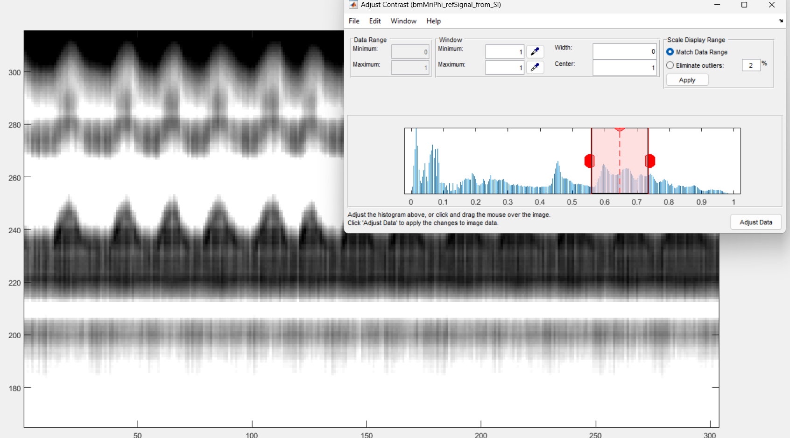You need now to define 3 pairs of lines by 6 clicks (and some possible re-adjustments) and then close the window to terminate the section.
The first pair of lines is to define a horizontal window.
Do s + Left Click to set the left end of the window.
Do s + Right Click to set the right end of the window.
As for respiratory binning, the program is going to construct internally the even extension of the reference signal extracted by the present section. Observe next figure to select the left and right end of the horizontal window so that no pathology occurs, if possible (it is not critical but do your best).
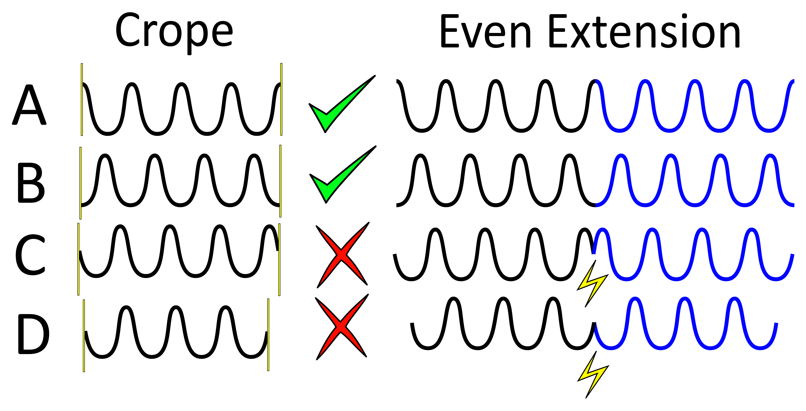In order to avoid pathologies in the even extension of the reference signal, we will select the left and right ends (yellow vertical bars) of the horizontal window either in two maxima of the respiratory patern, or in two minima. You can zoom with the loop to click precisely.
In the case of cardiac binning, it may be trycky to tarjet two minima or maxima. We suggest to put the vertical lines on two white strikes. If that is too sunjective, just do your best, it is not critical anyway.
Note that the left end of that horizontal window also serve to exclude the non-steady-state acquired data.
Here is an example of the selection for the left and right ends of the horizontal window.
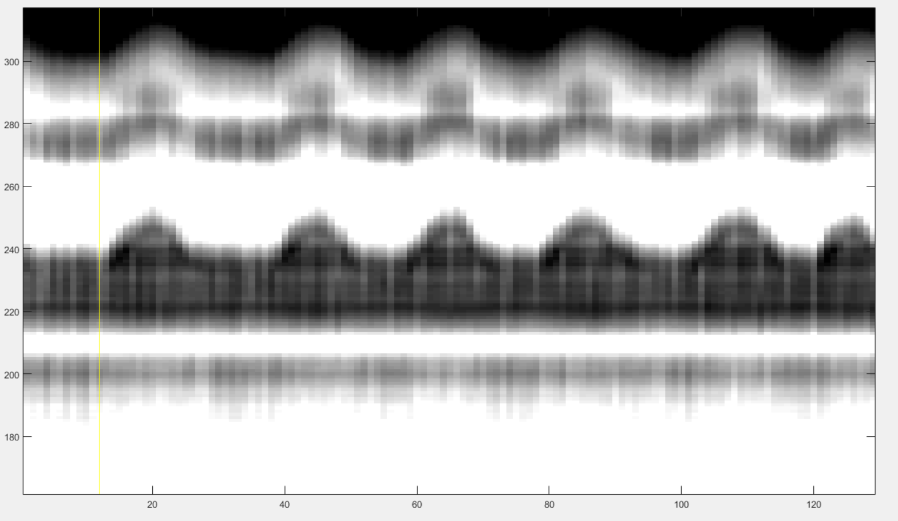 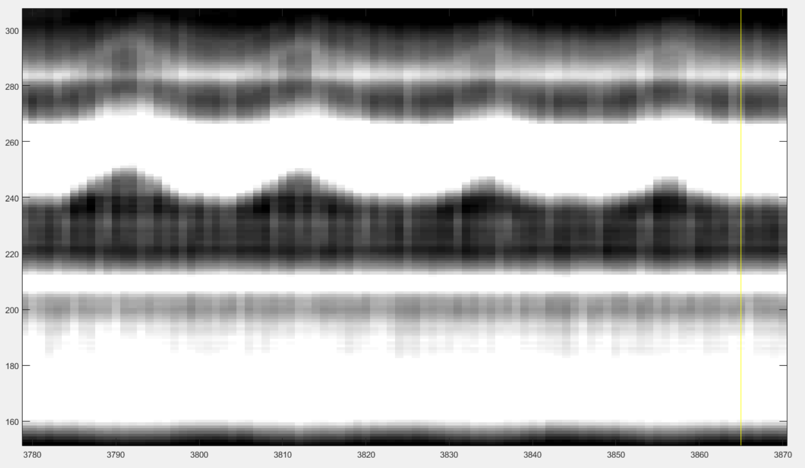You have now to define the lower and upper bound of the vertical window that contains the some caracteristic patterns of cardiac motion. The best way to do it is to select some vertical window that seems to contain some cardiac pattern and then adjust it as described below. Make two clicks as follows:
Do x + Left Click to set the lower bound of the window.
Do x + Right Click to set the upper end of the window.
After these two clicks you may see someting like this:
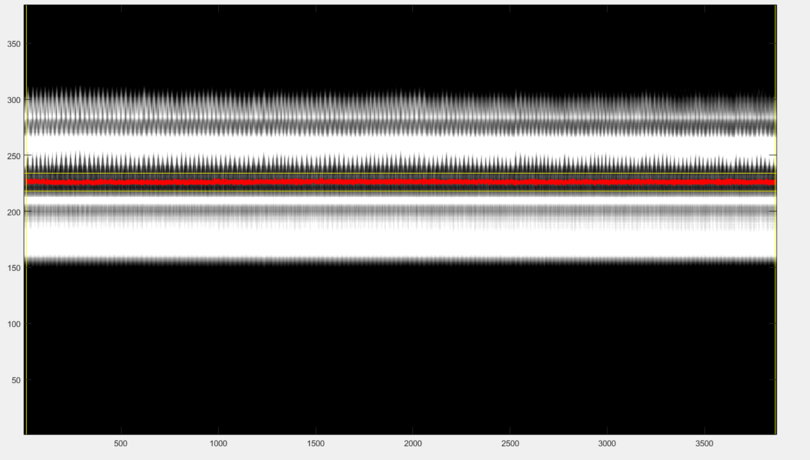The red line is the reference signal generated from the selected windows. It is a weighted average of the grey values in the vertical window. You have now to adjust it:
press the up-arrow to shift the vertical window up,
press the down-arrow to shift the vertical window down,
press the ctrl+right-arrow to increase the width of vertical window,
press the ctrl+left-arrow to decrease the width of vertical window,
You can also play with the displayed signal without chaning its values internally, by using following keys:
press ctrl+up-arrow to increase the displayed amplitude of the reference signal,
press ctrl+down-arrow to decrease the displayed amplitude of the reference signal.
press ctrl+R to flip up-down the reference signal.
After playing with those adjustments, you may be able to end up with a reference signal that is synchronized with the strikes due to cardiac motion. If you are lucky, you may see someting like this:
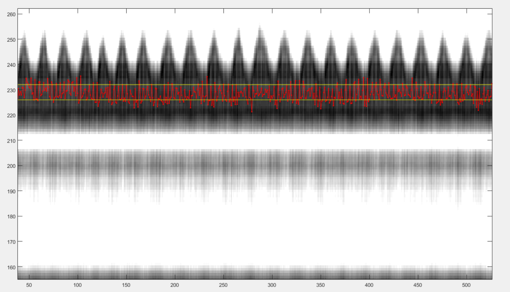If the strikes due to cardiac movement are not visible, just set a vertical window that you suspect to contain information about cardiat motion. The filtering of the signal below may reveal some cardiac dependent signal.
Finally, chose a vertical window that will serve for display purpose only in the rest of the precedure.
press n + left-click to select the lower bound of the display window,
press n + right-click to select the upper bound of the display window.
After those clicks, you should see someting like this:
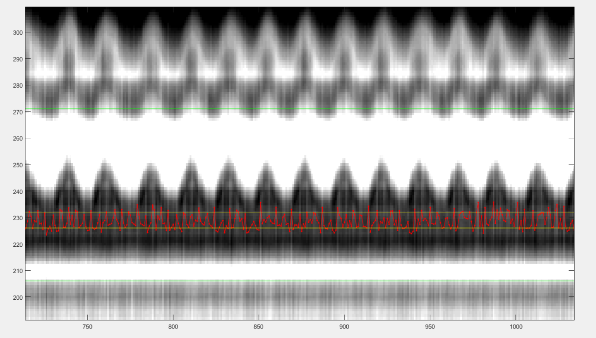You can now close the windows and the chosen reference signal will automatically be saved.
Graphical Frequency Selector
We will now bandpass filter the reference signal. Run the following section.
%% graphical frequency selector [ s_ref_lowPass, ... s_ref_bandPass, ... lowPass_filter, ... bandPass_filter ] = ... bmMriPhi_graphical_frequency_selector( s_ref, ... t_ref, ... Fs_ref, ... nu_ref, ... imNav );
You should then see the graphical frequency selector appear. In the left pannel is the frequency spectrum of the reference signal displayed, and the right pannel is the reference signal displayed. On the left pannel, in the upper line of buttons, press the more right button the stretch the frequency axis to the right until you see a similar picture like the following.
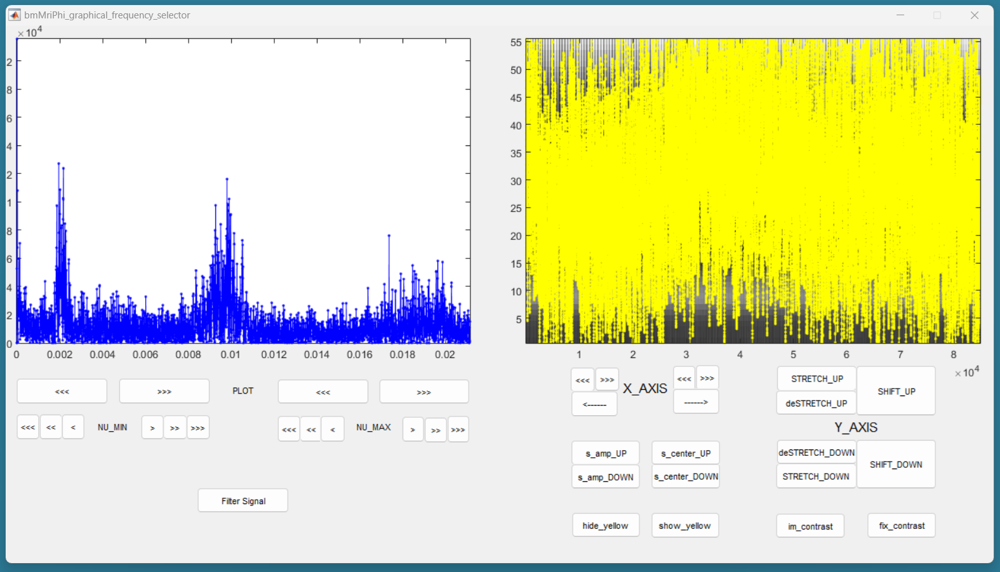Still on the left pannel, in the lower line of buttons, on the right, press the “<<<” button to decrese the value of the maximum frequency of the filter. You may have to press many times until the effect appears on the displayed range of frequencies. You can also use the buttons “<<” and “<” to be more precise. Try to identify the peak arround the base frequency of the cardiac signal, and create a lowpass filter that include that peak. Then increase the minimum frequency of the filter to make it bandpass, so that only the frequencies arround the base frequency of the cardiac signal are accepted by the filter. Here is an example:
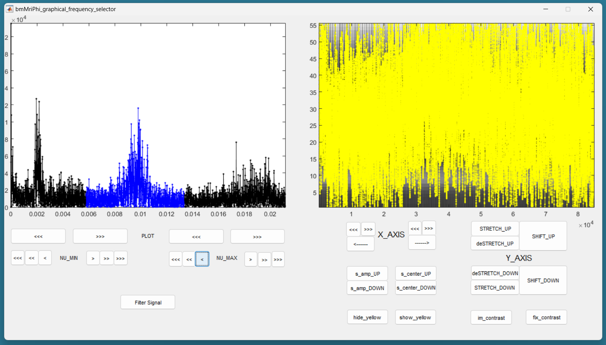Then press the button “Filter Signal”. The filtered signal appears then in blue on the right pannel. You can press “Hide Yelow” to discard the reference signal.
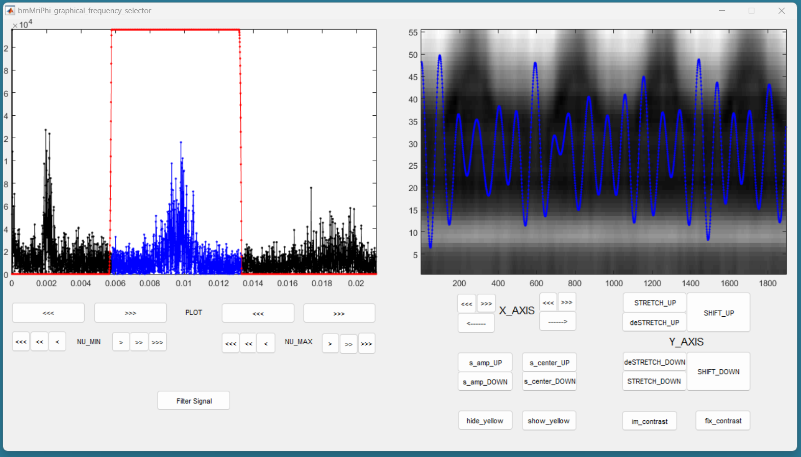You can stretch the time axis in both directions using the “<<<” and “>>>” buttons and navigate using the “—>” and “<—” buttons to inspect the filtered reference signal. Make sure that the signal looks like a sinusoid modulated in amplitude and frequency, but that no harmonic of the base frequency are expressed. There should ideally be no ringing in the filtered signal. If needed, you can re-adjust the filter and press “Filter Signal” again, until the filtered signal looks like a modulated sinusoid.
You can change the contrast of the background in the right pannel with the imcontrast tool of Matlab by pressing the “imcontrast” button. But once you have changed the contrast, press the “fix contrast” buton, else the changes in contrast will be lost.
By adjusting the contrast, you should observe that the filtered signal oscilated together with the vertical strikes due to cardiac motion. This confirms that the correct peak was selected in the frequency spectrum. If you cannot see those strikes, a good rule of thumb is that the first peak in the frequency spectrum is due to respiratory motion, and the second is due do cardiac motion.
You can now close the window and the filter will be saved.
Reformating the Filtered Signal
Just execute the following automatic section.
%% reformated_signal_ref check_image = rmsSI(ind_SI_min:ind_SI_max, :); reformated_signal_ref = ... bmMriPhi_fromSI_standartSignal_to_reformatedSignal( s_ref_bandPass, ... nSeg, ... nShot, ... ind_shot_min, ... ind_shot_max, ... check_image );
A figure appears then to show the filtered signal reformated with the correct size. You can check on that figure that the filtered signal oscillate toghether with the background.
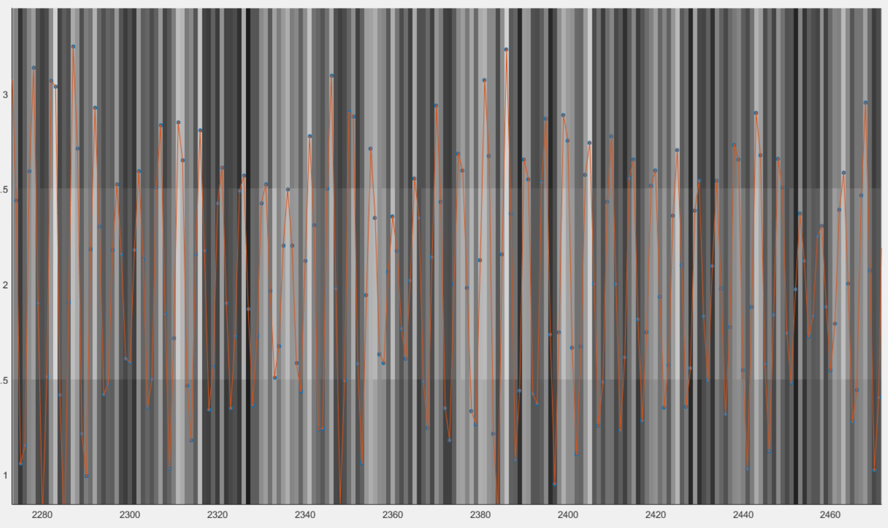You can close that figure and go to the next section.
Looking for Signal Candidates in Order to Create a Phase
This section is automatic and requires no input. The called functions will creates some signal candidates that will be used hereafter to create a phase. Just execute it and go to the next section.
%% extracting reformated_signal_list from SI if nSignal_to_select > 1 nSignal_to_select_minus_1 = nSignal_to_select - 1; reformated_signal_list = ... bmMriPhi_fromSI_collect_signal_list( filter_type, ... t_ref, ... nu_ref, ... SI, ... lowPass_filter, ... bandPass_filter, ... nCh, ... N, ... nSeg, ... nShot, ... nSignal_to_select_minus_1, ... signal_exploration_level, ... ind_shot_min, ... ind_shot_max, ... ind_SI_min, ... ind_SI_max,... s_reverse_flag ); else reformated_signal_list = []; end reformated_signal_list = cat( 1, ... reformated_signal_ref, ... reformated_signal_list);
Selecting the Best Candidate Signals
After executing the following section, you will see a sequence of figures appear showing some candidate signales in their phase space. After closing the window of a candidate signal, answer if you accept of reject the signal. A signal that spins arround the center without crossing the center is considered of good quality to evaluate a phase and should be accepted. A signal that crosses the center is considered of bad quality to evaluate a phase and should be rejected.
%% computing card phase [cardPhase, cardPhase_list] = ... bmMriPhi_signalList_to_phase( reformated_signal_list );
Here is an example of candidate signal:
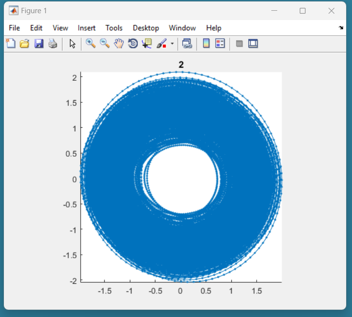
{kind=link}
{kind=link}
{kind=link}
{kind=link}
{kind=link}
{kind=link}
{kind=link}
{kind=link}
{kind=link}
{kind=link}
{kind=link}
{kind=link}
{kind=link}
This signal is of good quality because it is not present in the center. This should be accepted in the following dialog box:
{kind=link}
Here is another example of candidate signal:
{kind=link}
This signal is of bad quality because it present in the center. This should be rejected in the following dialog box:
{kind=link}
After you gave an answer for every of the candidate signals, two graph are displayed:
one showing each phase computed from each accepted signals. All the phases have to approximatelly agree together. That means that all signals measure the same cardiac phase.
another showing the combination of all phases computed from each accepted signals. That phase will be used to create the binning masks.
Here a are some example of these two graphs:
{kind=link}
{kind=link}
You can now close all figures and go to the last section.
Create the Masks
Here is the last section for cardiac binning. You can run it.
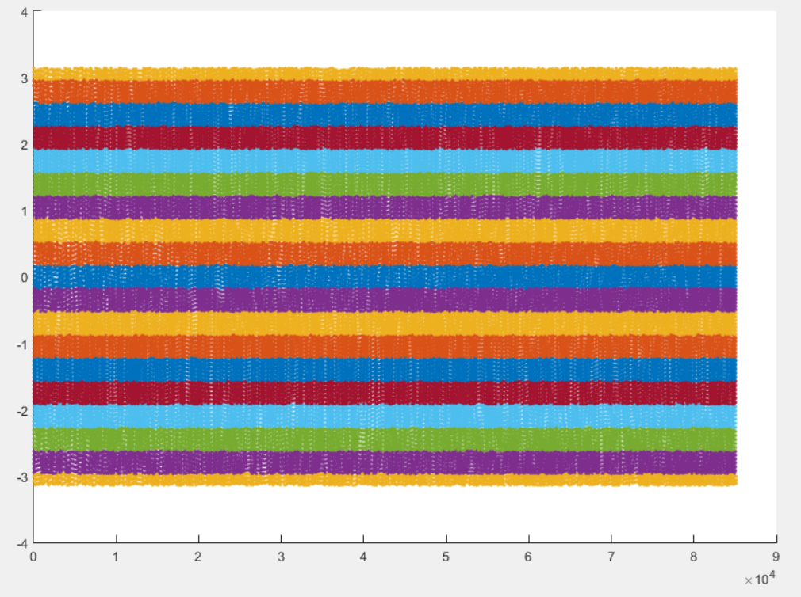%% mask_construction cMask = bmMriPhi_phase_to_mask(cardPhase, nMask, maskWidth);
The binning mask are displayed and stored in the variable cMask. Note that the first lines are excuded by all masks, in accordance with the selection of the horizontal window at the beginning of the script.
You can now save the binning mask on the disk for a future purpose.
{kind=link}